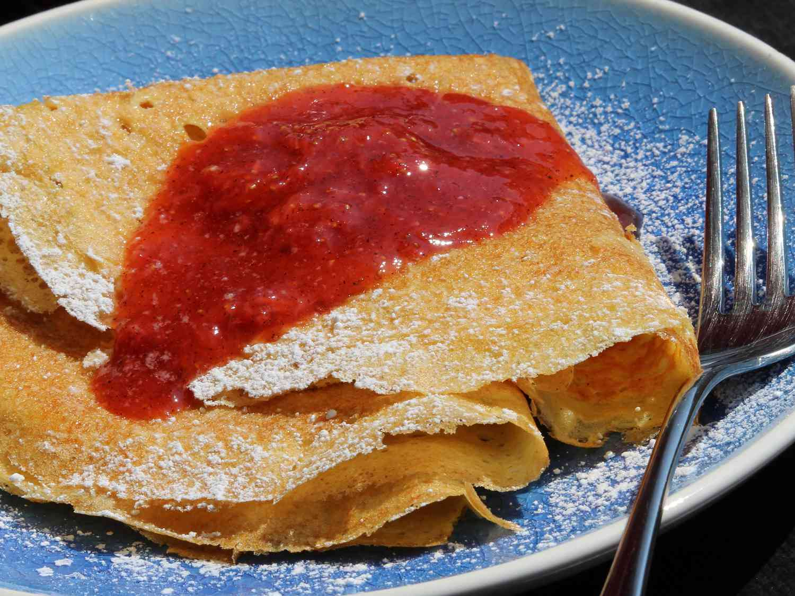

Finnish Pancakes

Description
Delicious crepe-like pancakes that are sure to please. You may double or triple the recipe.
Serve with warmed maple syrup or a sprinkle of confectioners' sugar and a squeeze of fresh lemon juice.
Ingredients
- 1 cup milk
- 2 tablespoons butter, melted
- 2 eggs
- ½ cup all-purpose flour
- 1 teaspoon baking powder
- ½ teaspoon vanilla extract
- ½ teaspoon salt
Steps
- Pour milk into a microwave-safe bowl. Heat in the microwave until slightly warm, 20 to 30 seconds. Whisk in butter. Whisk in eggs.
Add flour, baking powder, vanilla extract, and salt; blend briefly with an immersion blender to make a smooth batter.
- Heat a lightly oiled griddle over medium-high heat. Drop batter by large spoonfuls onto the griddle and cook until bottom is golden brown, 2 to 3 minutes.
Flip and cook until browned on the other side, 2 to 3 minutes. Repeat with remaining batter.